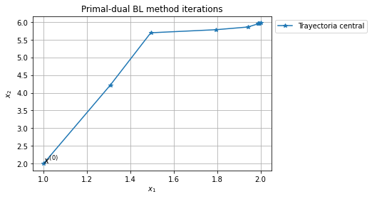
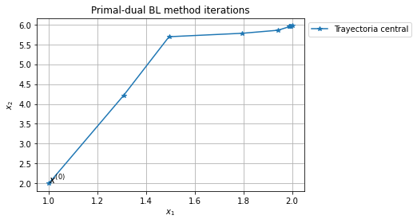
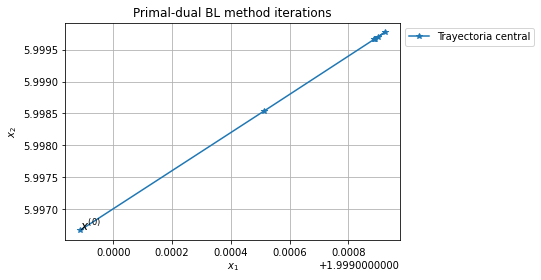
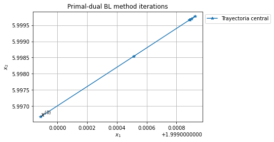

4.5 Método primal-dual de barrera logarítmica (BL)¶
Notas para contenedor de docker:
Comando de docker para ejecución de la nota de forma local:
nota: cambiar <ruta a mi directorio> por la ruta de directorio que se desea mapear a /datos dentro del contenedor de docker.
docker run --rm -v <ruta a mi directorio>:/datos --name jupyterlab_optimizacion_2 -p 8888:8888 -p 8787:8787 -d palmoreck/jupyterlab_optimizacion_2:3.0.0
password para jupyterlab: qwerty
Detener el contenedor de docker:
docker stop jupyterlab_optimizacion_2
Documentación de la imagen de docker palmoreck/jupyterlab_optimizacion_2:3.0.0 en liga.
Nota generada a partir de liga1, liga2, liga3
Al final de esta nota el y la lectora:
Conocerá el método primal dual de barrera logarítmica para resolver programas lineales.
Aprenderá que tal método:
es un caso particular de métodos de penalización para resolver problemas de optimización con restricciones.
tiene la capacidad de resolver problemas convexos.
trabaja con bloques de matrices lo que ayuda a aprovechar operaciones vectoriales o matriciales.
puede implementarse con cómputo en paralelo.
El método primal-dual de barrera logarítmica (BL) es un método iterativo que realiza un manejo de las variables primales y duales del problema de optimización a resolver. Se le clasifica como un método por puntos interiores.
Métodos por puntos interiores (PI)¶
Los métodos por puntos interiores (PI) son esquemas iterativos que en un inicio se utilizaron para resolver PL’s, sin embargo, se ha extendido su uso al caso no lineal. Por ejemplo, distintos tipos de métodos por PI han sido usados para resolver problemas de optimización convexos, ver problemas de optimización convexa en su forma estándar o canónica.
En cada iteración de los métodos PI las restricciones de desigualdad del problema de optimización se satisfacen de forma estricta. Cada iteración es costosa de calcular y realiza avance significativo a la solución en contraste con el método símplex que requiere un gran número de iteraciones no costosas. Una característica que tienen los métodos PI es que los problemas large scale no requieren muchas más iteraciones que los problemas small scale a diferencia del método símplex. Sin embargo para problemas small scale en general realizan más iteraciones que el método símplex.
En cada iteración el método símplex se mueve de la solución FEV actual a una solución FEV adyacente por una arista de la frontera de la región factible, ver método símplex. Los problemas del tipo large scale tienen una cantidad enorme de soluciones FEV. Para ver esto piénsese en un PL al que se le van añadiendo restricciones funcionales. Entonces se añadirán aristas y por tanto soluciones FEV. Los métodos PI evitan tal comportamiento pues avanzan por el interior de la región factible hacia los puntos óptimos y tiene muy poco efecto el ir añadiedo restricciones funcionales al PL para el desempeño de los métodos PI.
Observación
Los métodos PI han mostrado “buena” eficiencia (en términos del número de iteraciones realizadas) en resolver problemas de optimización large scale. Además son métodos que pueden implementarse para procesamiento con cómputo en paralelo.
Los métodos PI conforme avanzan en las interaciones aproximan a los puntos óptimos en el límite. Por ejemplo, para el ejemplo prototipo de un programa lineal (PL) a continuación se presenta una trayectoria obtenida por un método PI que se aproxima a la solución óptima \((2, 6)\):
import numpy as np
import matplotlib.pyplot as plt
np.set_printoptions(precision=3, suppress=True)
#x_1 ≤ 4
point1_x_1 = (4,0)
point2_x_1 = (4, 10)
point1_point2_x_1 = np.row_stack((point1_x_1, point2_x_1))
#x_1 ≥ 0
point3_x_1 = (0,0)
point4_x_1 = (0, 10)
point3_point4_x_1 = np.row_stack((point3_x_1, point4_x_1))
#2x_2 ≤ 12 or x_2 ≤ 6
point1_x_2 = (0, 6)
point2_x_2 = (8, 6)
point1_point2_x_2 = np.row_stack((point1_x_2, point2_x_2))
#x_2 ≥ 0
point3_x_2 = (0, 0)
point4_x_2 = (8, 0)
point3_point4_x_2 = np.row_stack((point3_x_2, point4_x_2))
#3x_1 + 2x_2 ≤ 18
x_1_region_1 = np.linspace(0,4, 100)
x_2_region_1 = 1/2*(18 - 3*x_1_region_1)
x_1 = np.linspace(0,6, 100)
x_2 = 1/2*(18 - 3*x_1)
plt.plot(point1_point2_x_1[:,0], point1_point2_x_1[:,1],
point3_point4_x_1[:,0], point3_point4_x_1[:,1],
point1_point2_x_2[:,0], point1_point2_x_2[:,1],
point3_point4_x_2[:,0], point3_point4_x_2[:,1],
x_1, x_2)
optimal_point = (2, 6)
plt.scatter(optimal_point[0], optimal_point[1], marker='o', s=150,
facecolors="none", edgecolors='b')
plt.legend(["$x_1 = 4$", "$x_1 = 0$",
"$2x_2 = 12$", "$x_2 = 0$",
"$3x_1+2x_2 = 18$", "(óptimo coordenada 1, óptimo coordenada 2)"], bbox_to_anchor=(1, 1))
point_1_interior_points = (1, 2)
point_2_interior_points = (1.27, 4)
point_3_interior_points = (1.38, 5)
point_4_interior_points = (1.56, 5.5)
points_interior_points = np.row_stack((point_1_interior_points,
point_2_interior_points,
point_3_interior_points,
point_4_interior_points))
plt.plot(points_interior_points[:, 0], points_interior_points[:, 1],
marker='o', color="blue"
)
plt.fill_between(x_1_region_1, 0, x_2_region_1, where=x_2_region_1<=6, color="plum")
x_1_region_2 = np.linspace(0,2, 100)
plt.fill_between(x_1_region_2, 0, 6, color="plum")
plt.title("Región factible del PL")
plt.show()
Aunque los métodos PI son una buena alternativa para resolver PL’s perdemos ventajas que tiene el método símplex como es el análisis de sensibilidad y el análisis posterior que puede realizarse al modificar los parámetros del PL. Ver las referencias al final de la nota para tales análisis.
Método primal-dual¶
Se describirán dos ideas que se utilizan en los métodos primal dual y posteriormente una tercera idea que utiliza la función de barrera logarítmica (FBL). Para esto, considérese la forma estándar de un PL (PLE):
donde: \(A \in \mathbb{R}^{m \times n}, b \in \mathbb{R}^m\), \(m < n\) con rank completo por renglones y las restricciones se interpretan de una forma pointwise.
La función Lagrangiana del problema anterior es:
donde: \(\mathcal{L}: \mathbb{R}^n \times \mathbb{R}^n \times \mathbb{R}^m \rightarrow \mathbb{R}\).
El problema dual asociado es:
Las condiciones KKT son:
Los métodos de la clase primal-dual encuentran soluciones \((x^*, \lambda^*, \nu^*)\) para las igualdades anteriores y modifican las direcciones de búsqueda y tamaños de paso para que las desigualdades se satisfagan de forma estricta en cada iteración.
En los métodos de la clase primal-dual reescribimos las condiciones KKT de optimalidad anteriores mediante una función \(F: \mathbb{R}^{2n + m} \rightarrow \mathbb{R}^{2n+m}\) dada por:
y resolvemos la ecuación no lineal \(F(x, \lambda, \nu )=0\) para \((x, \lambda) \geq 0\), donde: \(X = \text{diag}(x_1, \dots, x_n)\), \(\Lambda = \text{diag}(\lambda_1, \dots, \lambda_n)\) y \(e\) es un vector de \(1\)’s en \(\mathbb{R}^n\). Además en cada iteración se cumple \(x^{(k)} > 0\) y \(\lambda^{(k)} > 0\) para \((x^{(k)}, \lambda^{(k)}, \nu^{(k)})\), por esto tales métodos son considerados como puntos interiores.
Como la mayoría de los métodos iterativos en optimización, los métodos primal-dual tienen un procedimiento para determinar la dirección de búsqueda y una cantidad que debe ser monitoreada cuyo valor alcance un valor objetivo. En el caso de los PLE’s tal cantidad es la duality gap medida como: \(\lambda^Tx\), ver brecha dual.
Primera idea: determinar la dirección de búsqueda¶
La dirección de búsqueda se determina aplicando el método de Newton al sistema de ecuaciones no lineales que se muestra en el margen del PLE. Por tanto, se resuelve el sistema de ecuaciones lineales:
donde: \(J_F\) es la Jacobiana de \(F\) cuya expresión es:
para el vector de incógnitas \(\left [ \begin{array}{c} \Delta x \\ \Delta \lambda \\ \Delta \nu \end{array} \right ]\).
Una vez calculado tal vector de incógnitas se realiza la actualización:
donde: \(k\) hace referencia a la \(k\)-ésima iteración.
Ver Sistema de ecuaciones no lineales.
Observación
Si bien podría elegirse otra dirección de búsqueda, la dirección de Newton (o variantes de ésta) se prefiere por sus propiedades de convergencia e invarianza ante transformaciones afín.
Si denotamos \(r_d = c - A^T \nu - \lambda, r_p = b - Ax\) como el residual para factibilidad dual y residual para factibilidad primal respectivamente entonces el sistema de ecuaciones lineales a resolver es:
Comentarios
El sistema de ecuaciones lineales anterior para problemas large scale no se construye pues es un sistema cuadrado de tamaño \(2n + m \times 2n + m\) y se resuelve reduciéndolo a sistemas de ecuaciones equivalentes. Representa el paso más costoso del método primal-dual.
Se pueden eliminar los signos negativos que están en los bloques de la matriz del sistema de ecuaciones lineales anterior que contienen \(A, A^T\) pero por consistencia con lo desarrollado en la nota de dualidad para un PL se mantienen los signos negativos (si se eliminan también debe de ajustarse el lado derecho del sistema). Esta modificación se relaciona con la definición de la función Lagrangiana.
Segunda idea: cortar el paso¶
Si se toma un paso completo es muy posible que en la siguiente iteración se encuentre muy cerca de alguna de las fronteras de restricción o bien se salga de la región factible. Para esto se define un parámetro \(t^{(k)} \in (0, 1]\) y por tanto la actualización es:
donde: \(k\) hace referencia a la \(k\)-ésima iteración.
Comentario
El parámetro \(t^{(k)}\) se calcula con metodologías como búsqueda de línea o regiones de confianza, ver line search, método de búsqueda de línea por backtracking, trust region.
Método primal-dual de barrera logarítmica (BL)¶
Tercera idea: reducir la duality gap y centrar. Uso de la función de barrera logarítmica (FBL)¶
En cada iteración los métodos primal-dual buscan reducir la duality gap o bien mantenerse “cerca” de la trayectoria nombrada trayectoria central.
Comentario
Recuérdese que la duality gap en un PLE para el par \((x, \nu)\) primal-dual factible está dada por la diferencia: \(c^Tx - b^T \nu\). La duality gap en un PLE es igual a \(\lambda^Tx\). En el sistema de ecuaciones lineales que se muestra en el margen se representa cada sumando de \(\lambda^Tx\) con el producto \(X \Lambda e\) (recuérdese \(X, \Lambda\) son matrices diagonales).
La trayectoria central se define a partir de la FBL, ver Barrier function. La definición siguiente se da para un POCE de forma general.
Definición
Considérese el problema de optimización convexa en la forma estándar (POCE):
con \(A \in \mathbb{R}^{p \times n}\) y rank de \(A\) igual a \(p < n\).
Se define la función de barrera logarítmica (FBL) como:
El POCE se resuelve planteando el siguiente problema:
donde: \(f_B(x|t_B) = f_o(x) + \frac{1}{t_B} \phi(x) = f_o(x) - \frac{1}{t_B} \displaystyle \sum_{i=1}^m \log(-f_i(x))\), \(\phi: \mathbb{R}^n \rightarrow \mathbb{R}\) con \(t_B\) un parámetro positivo que nombramos parámetro de barrera. Denotamos a este problema como problema de barrera logarítmica (PBL).
x = np.linspace(-2, -.1, 100)
log_barrier = -np.log(-x)
t_B1 = 0.2
t_B2 = 0.5
t_B3 = 1
t_B4 = 2
t_B5 = 10
plt.plot(x, 1/t_B1*log_barrier, "r",
x, 1/t_B2*log_barrier, "b",
x, 1/t_B3*log_barrier, "g",
x, 1/t_B4*log_barrier, "m",
x, 1/t_B5*log_barrier, "c")
plt.legend(["$t_{B1}=0.2$",
"$t_{B2}=0.5$",
"$t_{B3}=1$",
"$t_{B4}=2$",
"$t_{B5}=10$"], bbox_to_anchor=(1,1))
plt.axhline(color="black")
plt.axvline(color="black")
plt.title("Gráfica de la FBL variando el parámetro $t_B$")
plt.show()
Valores más grandes de \(t_B\) hacen que \(f_B(x|t_B)\) tienda a \(f_o(x)\). Como se observa en la gráfica anterior al elegir un valor de \(t_B\) cada vez más grande se tiene: \(f_B(x|t_B) = f_o(x) + \frac{1}{t_B} \phi(x) \approx f_o(x)\).
Comentarios
La función \(\phi(x) = -\frac{1}{t_B} \log(-x)\) para \(x < 0\) es convexa, diferenciable y aproxima a la función indicadora:
la cual es una función discontinua:

En el dibujo anterior sólo se visualiza para el eje horizontal el intervalo \((-\infty, 0)\).
La función indicadora del punto anterior ayuda a reescribir el POCE como:
por esto resolver el PBL es equivalente a resolver el POCE para valores más grandes de \(t_B\).
La FBL es un caso particular de funciones de barrera que penalizan al no satisfacer las restricciones de desigualdad, ver Penalty method.
En general las funciones de barrera deben tener las siguientes propiedades para \(x\) primal factibles:
Tener valores “pequeños” si \(x\) está “lejos” de la frontera de la región factible.
Tener valores “grandes” si \(x\) está “cerca” de la frontera de la región factible.
Tener propiedades como convexidad o diferenciabilidad (ventajas al tener tales propiedades).
Por lo anterior las funciones de barrera evitan que se cruce o llegue a la frontera de la región factible del problema primal.
Otra función de barrera para un PL es: \(\phi(x) = -\displaystyle \sum_{i=1}^m \frac{1}{f_i(x)}\) para \(x\) factibles.
Los problemas de optimización convexos con únicamente restricciones de igualdad pueden resolverse aplicando extensiones del método de Newton.
Trayectoria central determinada por los puntos centrales¶
Definición
Para cada valor del parámetro de barrera \(t_B\), se definen los puntos centrales \(x^*(t_B)\) como la solución del PBL y el conjunto de puntos centrales se le nombra trayectoria central, central path.
Revisemos las condiciones KKT de optimalidad que deben cumplir los puntos centrales para un PLE:
con \(A \in \mathbb{R}^{m \times n}\) y rank de \(A\) igual a \(m < n\).
Se tiene:
y por tanto el PBL para el PLE (PBL-PLE) es:
La función Lagrangiana del PBL-PLE es:
con \(a_i\) \(i\)-ésimo renglón de \(A\) y \(b_i\) \(i\)-ésima entrada de \(b\). Las condiciones necesarias y suficientes KKT de optimalidad del PBL-PLE son:
donde: \(d = X^{-1}e = \left [ \begin{array}{c} \frac{1}{x_1} \\ \vdots \\ \frac{1}{x_n} \\ \end{array} \right ]\). Ver condiciones KKT para un PL en su forma estándar (se muestran en el margen).
Los puntos centrales \(x^*(t_B)\) resuelven el PBL-PLE y por tanto satisfacen:
donde: \(d(t_B) = X^{*-1}(t_B)e = \left [ \begin{array}{c} \frac{1}{x_1^*(t_B)} \\ \vdots \\ \frac{1}{x_n^*(t_B)} \\ \end{array} \right ]\).
Relación entre las condiciones KKT de optimalidad del PLE y las del PBL-PLE¶
Para establecer la relación entre las condiciones KKT de optimalidad del PLE y las del PBL-PLE considérese sólo en esta sección que el PBL-PLE es:
Observación
Esta forma del PBL-PLE es equivalente a la revisada anteriormente en la que la FBL se divide por el parámetro \(t_B\). Es una cuestión sólo de escritura matemática lo que se realiza a continuación.
Las condiciones KKT son iguales a las revisadas en la sección anterior salvo la posición en la que se tiene el parámetro \(t_B\):
donde: \(\hat{\nu} = t_B \nu\).
Las condiciones KKT para un PLE se muestran en el margen y obsérvese que si \(\lambda_i^*(t_B) = - \frac{1}{t_B f_i(x^*(t_B))} = - \frac{1}{t_B (-x_i^*(t_B))}\) con \(x_i^*(t_B)\) \(i\)-ésima componente de \(x^*(t_B)\) \(\forall i = 1, \dots, n\) entonces se cumple:
pues por la definición de la FBL en el PBL-PLE debe cumplirse: \(f_i(x) = -x_i < 0\) o bien para los puntos centrales \(-x_i^*(t_B) < 0 \forall i=1, \dots, n\). Lo anterior resulta del dominio de la función \(\log\) la cual está definida únicamente en \(\mathbb{R}_{++}\) (reales positivos). Esto satisface las desigualdades de factibilidad primal y de factibilidad dual de las condiciones KKT de optimalidad.
La holgura complementaria de las condiciones KKT de optimalidad para un PBL-PLE son:
Por tanto la duality gap asociada con \(x^*(t_B), \lambda^*(t_B), \nu^*(t_B)\) es: \(\frac{n}{t_B}\) donde: \(\nu^*(t_B) = \frac{\hat{\nu}}{t_B}\).
Comentarios
Por la forma de la duality gap anterior para los puntos centrales si \(t_B\) se incrementa entonces la duality gap tiende a cero en el método primal dual de BL.
Para un PBL que se obtiene de un POCE la duality gap anterior para los puntos centrales es \(\frac{m}{t_B}\) pues se tienen \(m\) funciones \(f_i\) de desigualdad.
Las condiciones KKT de optimalidad del PBL-PLE son las condiciones KKT de optimalidad del PLE (que se muestran en el margen) pero perturbadas por el parámetro \(t_B\):
donde: \(\hat{\nu} = t_B \nu\), \(d(t_B) = X^{-1}(t)e = \left [ \begin{array}{c} \frac{1}{x_1(t_B)} \\ \vdots \\ \frac{1}{x_n(t_B)} \\ \end{array} \right ]\) y la duality gap se estima como: \(\lambda(t_B)^Tx(t_B) = \frac{n}{t_B}\).
¿Cómo calcular los puntos centrales?¶
Para calcular los puntos centrales del PBL-PLE se utiliza la primera idea: determinar la dirección de búsqueda en la que se resuelve el siguiente sistema de ecuaciones no lineales con el método de Newton:
donde: \(d(t_B) = X^{*-1}(t)e = \left [ \begin{array}{c} \frac{1}{x_1^*(t_B)} \\ \vdots \\ \frac{1}{x_n^*(t_B)} \\ \end{array} \right ]\).
Este sistema de ecuaciones no lineales conduce a resolver el sistema de ecuaciones lineales:
donde: \(J_F(x, \nu) = \left [ \begin{array}{cc} \nabla_{xx} ^2 \mathcal{L}_B(x, \nu) & \nabla_{\nu x} \mathcal{L}_B(x,\nu) \\ -A & 0\end{array} \right ] = \left [ \begin{array}{cc} \frac{1}{t_B} D^2(t_B) & -A^T \\ -A & 0\end{array} \right ]\) y \(D^2(t_B) = \text{diag}^2(d(t_B)) \in \mathbb{R}^{n \times n}\).
La actualización en el método de Newton es:
donde se utilizó la segunda idea: cortar el paso.
Comentarios
Se pueden eliminar los signos negativos que están en los bloques de la matriz del sistema de ecuaciones lineales anterior que contienen \(A, A^T\) pero por consistencia con lo desarrollado en la nota de dualidad para un PL se mantienen los signos negativos (si se eliminan también debe de ajustarse el lado derecho del sistema). Esta modificación se relaciona con la definición de la función Lagrangiana.
También una modificación que se realiza para que en el primer bloque del sistema de ecuaciones lineales anterior no tengamos del lado izquierdo y del lado derecho \(\frac{1}{t_B}\) se puede trabajar con el problema de optimización equivalente:
donde: \(f_B(x|t_B) = t_Bf_o(x) + \phi(x) = t_Bf_o(x) - \displaystyle \sum_{i=1}^m \log(-f_i(x))\).
Estas dos modificaciones se utilizan para implementar el método primal-dual de BL.
Método primal-dual de BL aplicado al ejemplo prototipo¶
!pip install --quiet "git+https://github.com/ITAM-DS/analisis-numerico-computo-cientifico.git#egg=opt&subdirectory=src"
Se utiliza el paquete de Python opt en los siguientes import’s.
from opt.utils_logarithmic_barrier import log_barrier_aux_eval_constraints, \
constraint_inequalities_funcs_generator, constraint_inequalities_funcs_eval, \
phi, logarithmic_barrier, line_search_for_log_barrier_by_backtracking
Problema de optimización:
Definimos la función \(\phi: \mathbb{R}^n \rightarrow \mathbb{R}\) como \(\phi(x) = - \displaystyle \sum_{i=1}^m \log(-(a_i ^Tx-b_i)) - \sum_{i=1}^n \log(-{e}_i ^T(-x))\) con \(a_i\) \(i\)-ésimo renglón de \(A = \left [ \begin{array}{cc} 1 & 0 \\0 & 2 \\ 3 & 2 \end{array} \right ]\), \(b_i\) \(i\)-ésima entrada del vector \(b = \left [ \begin{array}{c} 4 \\ 12 \\ 18 \end{array} \right ]\) y \(e_i\) \(i\)-ésimo vector canónico.
Para este problema las curvas de nivel de la función \(\phi\) se ven como sigue:
const_ineq_two_pars = {0: lambda x1,x2: x1 - 4,
1: lambda x1,x2: 2*x2 - 12,
2: lambda x1,x2: 3*x1 + 2*x2 - 18,
3: lambda x1,x2: -x1,
4: lambda x1,x2: -x2
}
def const_ineq_funcs_eval_two_pars(x1,x2,
const_ineq):
"""
Auxiliary function for the evaluation of constraint inequalities
in logarithmic barrier function using two parameters as input.
"""
const_ineq_funcs_eval = np.array([const(x1,x2) for const in \
constraint_inequalities_funcs_generator(const_ineq)])
return const_ineq_funcs_eval
def phi_two_pars(x1,x2, const_ineq):
"""
Implementation of phi function for logarithmic barrier using two
parameters as input.
"""
const_ineq_funcs_eval = -const_ineq_funcs_eval_two_pars(x1,
x2,
const_ineq)
log_barrier_const_eval = np.log(const_ineq_funcs_eval)
return -np.sum(log_barrier_const_eval, axis=0)
density=1e-1
x1l=0.1
x2d=0.1
x1r=4
x2u=8
x1_p=np.arange(x1l,x1r,density)
x2_p=np.arange(x2d,x2u,density)
x1_mesh,x2_mesh = np.meshgrid(x1_p,x2_p)
z = phi_two_pars(x1_mesh,x2_mesh,const_ineq_two_pars)
plt.plot(point1_point2_x_1[:,0], point1_point2_x_1[:,1], "--", color="black", label="_nolegend_")
plt.plot(point3_point4_x_1[:,0], point3_point4_x_1[:,1], "--", color="black", label="_nolegend_")
plt.plot(point1_point2_x_2[:,0], point1_point2_x_2[:,1], "--", color="black", label="_nolegend_")
plt.plot(point3_point4_x_2[:,0], point3_point4_x_2[:,1], "--", color="black", label="_nolegend_")
plt.plot(x_1, x_2, "--", color="black", label="_nolegend_")
plt.contour(x1_p, x2_p, z)
plt.title("Curvas de nivel de $\phi$")
plt.show()
/usr/local/lib/python3.7/dist-packages/ipykernel_launcher.py:24: RuntimeWarning: divide by zero encountered in log
/usr/local/lib/python3.7/dist-packages/ipykernel_launcher.py:24: RuntimeWarning: invalid value encountered in log
Reescribimos el problema anterior sin las restricciones \(A x \leq b\) como:
\( \displaystyle \min_{x \in \mathbb{R}^2} t_B(-3x_1 -5x_2) - [\log(4-x_1) + \log(12 - 2x_2) + \log(18 - (3 x_1 + 2 x_2)) + \log(x_1) + \log(x_2) ]\\ \)
Realizamos la actualización:
donde: \(t\) es parámetro de backtracking y \(\left [ \begin{array}{c}\Delta x_1 \\ \Delta x_2 \end{array} \right ]\) es solución del sistema de ecuaciones lineales:
que para este problema es:
donde:
\(c = \left [ \begin{array}{c}-3 \\ -5 \end{array} \right ], \tilde{A} = \left [ \begin{array}{c} A \\ I \end{array} \right ] = \left [ \begin{array}{cc} 1 & 0 \\0 & 2 \\ 3 & 2 \\ 1 & 0 \\ 0 & 1 \end{array} \right ]\), \(b_i\) \(i\)-ésima entrada del vector \(b = \left [ \begin{array}{c} 4 \\ 12 \\ 18 \end{array} \right ]\).
Y el vector \(d(t_B) = \left [ \begin{array}{c} \frac{1}{b_1 - a_1^Tx(t_B)} \\ \frac{1}{b_2 - a_2^Tx(t_B)} \\ \frac{1}{b_3 - a_3^Tx(t_B)} \\ \frac{1}{-x_1(t_B)} \\ \frac{1}{-x_2(t_B)} \end{array}\right ] = \left [ \begin{array}{c} \frac{1}{4-x_1(t_B)} \\ \frac{1}{12-2x_2(t_B)} \\ \frac{1}{18-3x_1(t_B)-2x_2(t_B)} \\ \frac{1}{-x_1(t_B)} \\ \frac{1}{-x_2(t_B)} \end{array}\right ]\).
Observación
Aunque podríamos definir las siguientes líneas de acuerdo al desarrollo matemático anterior:
A = np.array([[1, 0],
[0, 2],
[3, 2]])
m = 3
n = 2
b = np.array([4, 12, 18])
A_tilde = np.row_stack((A, np.eye(n)))
d = np.array([1/(b[0]-A[0,:].dot(x)),
1/(b[1]-A[1,:].dot(x)),
1/(b[2]-A[2,:].dot(x)),
1/(-x[0]),
1/(-x[1])])
system_matrix = (A_tilde.T*(d*d))@A_tilde
rhs = -(t_B*c +A_tilde.T@d)
usamos SymPy para uso de diferenciación simbólica (no se recomienda el uso de SymPy para problemas medium o large scale).
Comentario
Valores más “grandes” de \(t_B\) hacen que la Hessiana de la función objetivo del PBL varíe rápidamente cerca de la frontera del conjunto factible. En este ejemplo prototipo algunas de las entradas de \(\text{diag}^2(d(t_B))\) serán muy grandes en tales valores de \(t_B\).
import sympy
from sympy.tensor.array import derive_by_array
x1, x2 = sympy.symbols("x1, x2")
c = np.array([-3, -5])
fo_sympy = c[0]*x1 + c[1]*x2
phi_sympy = -(sympy.log(4-x1) + sympy.log(12-2*x2) + sympy.log(18-3*x1-2*x2) + sympy.log(x1) + sympy.log(x2))
gf_sympy = derive_by_array(fo_sympy, (x1, x2))
Hf_sympy = derive_by_array(gf_sympy, (x1, x2))
gphi_sympy = derive_by_array(phi_sympy, (x1, x2))
Hphi_sympy = derive_by_array(gphi_sympy, (x1, x2))
constraints_ineq = {0: lambda x: x[0] - b[0],
1: lambda x: 2*x[1] - b[1],
2: lambda x: 3*x[0] + 2*x[1] - b[2],
3: lambda x: -x[0],
4: lambda x: -x[1]
}
x_0 = np.array([1, 2], dtype=float)
x = x_0
fo = lambda x: np.dot(c, x)
t_B_0 = 10
b = np.array([4, 12, 18], dtype=float)
n = x_0.size
gf_B = lambda x, t_B: np.array([component.subs({"x1": x[0],
"x2": x[1],
"t_B": t_B}) for component in t_B*gf_sympy + gphi_sympy],
dtype = float)
Hf_B = lambda x, t_B: np.array([second_partial_derivative.subs({"x1": x[0],
"x2": x[1],
"t_B": t_B}) for second_partial_derivative in t_B*Hf_sympy + Hphi_sympy],
dtype=float).reshape(n,n)
Primera iteración¶
log_barrier_eval = logarithmic_barrier(fo,x,t_B_0,constraints_ineq)
print(log_barrier_eval)
-136.26909628370626
const_ineq_funcs_eval = -constraint_inequalities_funcs_eval(x,constraints_ineq)
print(const_ineq_funcs_eval)
[ 3. 8. 11. 1. 2.]
if(sum(const_ineq_funcs_eval < -np.nextafter(0,1)) >=1):
print("Some constraint inequalities evaluated in x were nonpositive, check approximations")
fo_eval = fo(x)
print(fo_eval)
-13.0
system_matrix = Hf_B(x, t_B_0)
rhs = -gf_B(x, t_B_0)
dir_Newton = np.linalg.solve(system_matrix, rhs)
print(dir_Newton)
[ 19.696 142.065]
dec_Newton_squared = rhs.dot(dir_Newton)
print(dec_Newton_squared)
7711.552360817478
stopping_criteria = dec_Newton_squared/2
print(stopping_criteria)
3855.776180408739
der_direct = -dec_Newton_squared
t = line_search_for_log_barrier_by_backtracking(fo,dir_Newton,x_0,t_B_0,
constraints_ineq,
der_direct)
/home/miuser/.local/lib/python3.7/site-packages/opt/utils_logarithmic_barrier.py:17: RuntimeWarning: invalid value encountered in log
eval_f_const_inequality = np.log(eval_f_const_inequality)
print(t)
0.015625
x = x + t*dir_Newton
print(x)
[1.308 4.22 ]
Segunda iteración¶
system_matrix = Hf_B(x, t_B_0)
rhs = -gf_B(x, t_B_0)
log_barrier_eval = logarithmic_barrier(fo,x,t_B_0,constraints_ineq)
print(log_barrier_eval)
-255.91817648985682
const_ineq_funcs_eval = -constraint_inequalities_funcs_eval(x,constraints_ineq)
print(const_ineq_funcs_eval)
[2.692 3.56 5.637 1.308 4.22 ]
if(sum(const_ineq_funcs_eval < -np.nextafter(0,1)) >=1):
print("Some constraint inequalities evaluated in x were nonpositive, check approximations")
fo_eval = fo(x)
print(fo_eval)
-25.022042371388302
dir_Newton = np.linalg.solve(system_matrix, rhs)
print(dir_Newton)
[11.93 94.597]
dec_Newton_squared = rhs.dot(dir_Newton)
print(dec_Newton_squared)
5021.819828077723
stopping_criteria = dec_Newton_squared/2
print(stopping_criteria)
2510.9099140388616
der_direct = -dec_Newton_squared
t = line_search_for_log_barrier_by_backtracking(fo,dir_Newton,x,t_B_0,
constraints_ineq,
der_direct)
print(t)
0.015625
x = x + t*dir_Newton
print(x)
[1.494 5.698]
Tercera iteración¶
system_matrix = Hf_B(x, t_B_0)
rhs = -gf_B(x, t_B_0)
log_barrier_eval = logarithmic_barrier(fo,x,t_B_0,constraints_ineq)
print(log_barrier_eval)
-333.0255657565843
const_ineq_funcs_eval = -constraint_inequalities_funcs_eval(x,constraints_ineq)
print(const_ineq_funcs_eval)
[2.506 0.604 2.122 1.494 5.698]
if(sum(const_ineq_funcs_eval < -np.nextafter(0,1)) >=1):
print("Some constraint inequalities evaluated in x were nonpositive, check approximations")
fo_eval = fo(x)
print(fo_eval)
-32.97166508298113
dir_Newton = np.linalg.solve(system_matrix, rhs)
print(dir_Newton)
[9.648 2.785]
dec_Newton_squared = rhs.dot(dir_Newton)
print(dec_Newton_squared)
406.3137761754695
stopping_criteria = dec_Newton_squared/2
print(stopping_criteria)
203.15688808773476
der_direct = -dec_Newton_squared
t = line_search_for_log_barrier_by_backtracking(fo,dir_Newton,x,t_B_0,
constraints_ineq,
der_direct)
print(t)
0.03125
x = x + t*dir_Newton
print(x)
[1.796 5.785]
Ejercicio
Utiliza las definiciones:
A = np.array([[1, 0],
[0, 2],
[3, 2]])
m = 3
n = 2
b = np.array([4, 12, 18])
A_tilde = np.row_stack((A, np.eye(n)))
d = np.array([1/(b[0]-A[0,:].dot(x)),
1/(b[1]-A[1,:].dot(x)),
1/(b[2]-A[2,:].dot(x)),
1/(-x[0]),
1/(-x[1])])
system_matrix = (A_tilde.T*(d*d))@A_tilde
rhs = -(t_B*c +A_tilde.T@d)
y realiza cuatro iteraciones recalculando lo necesario para el sistema de ecuaciones lineales con system_matrix y rhs dadas por las últimas dos líneas del código que está en este ejercicio. Corrobora que obtienes los mismos resultados que con SymPy.
Comentarios
La forma general de la condición de KKT de optimalidad \(\nabla_x \mathcal{L}_B(x^, \nu) = 0\) para un PBL que se obtuvo de un POCE es:
con: \(\mathcal{L}: \mathbb{R}^n \times \mathbb{R}^p \rightarrow \mathbb{R}\),
y al aplicar el método de Newton al sistema de ecuaciones no lineales conduce a resolver el sistema de ecuaciones lineales siguiente:
donde: \(r_p = b - Ax\) es el residual para factibilidad primal.
Definición decremento de Newton¶
Para problemas de optimización convexos sin restricciones:
en los que utilizamos el método de Newton para resolverlos, se utiliza una cantidad en criterios de paro y en resultados de convergencia nombrada el decremento de Newton.
Definición
El decremento de Newton para \(f_o: \mathbb{R}^n \rightarrow \mathbb{R}\) en \(x\) es la cantidad:
en donde se asume que \(f_o \in \mathcal{C}^2(\text{dom}f_o)\) y su Hessiana es definida positiva.
Comentarios
Asumiendo que existe un punto óptimo \(x^*\) y el valor óptimo se denota por \(p^* = f_o(x^*)\) el decremento de Newton tiene propiedades como son:
\(\frac{1}{2} \lambda ^2 (x)\) estima \(f_o(x)-p^*\).
\(|| \nabla^2 f_o(x)^{-1} \nabla f_o(x)||_{\nabla ^2f_o(x)} = \left ( \nabla f_o(x)^T \nabla^2 f_o(x)^{-1} \nabla ^2 f(x) \nabla ^2 f_o(x)^{-1} \nabla f_o(x) \right )^{1/2} = \lambda(x) \) que indica que \(\lambda(x)\) es la norma del paso de Newton en la norma cuadrática definida por la Hessiana.
En el método de búsqueda de línea por backtracking \(-\lambda (x) ^2\) es la derivada direccional de \(f_o\) en \(x\) en la dirección de \(\Delta x_{\text{nt}}\):
donde: \(t\) es el parámetro de búsqueda de línea por backtracking, \(\Delta x_{\text{nt}} = -\nabla ^2 f_o(x)^{-1} \nabla f_o(x)\) para \(x \in \text{dom}f_o\) es la dirección de Newton para \(f_o\) en \(x\).
En el método primal-dual para resolver un PBL el decremento de Newton se utiliza en las inner iterations.
Algoritmo primal-dual de BL para un PL con únicamente desigualdades¶
Para un problema de la forma:
Dados \(x\) un punto estrictamente factible, esto es: \(x > 0\), \(Ax < b\) (todas las entradas de \(x\) son positivas y \(a_i^Tx < b_i\)), \(t_B^{(0)}\) parámetro de barrera, \(\mu > 1\), \(tol > 0\).
\(t_B:= t_B^{(0)}\).
Repetir el siguiente bloque para \(k=1,2,\dots\)
Outer iterations:
Paso de centrado o inner iterations:
Calcular \(x^*(t_B)\) que resuelva: \(\displaystyle \min_{x \in \mathbb{R}^n} t_Bf_o(x) + \phi(x)\) iniciando con \(x\).
Utilizar criterio de paro para inner iterations.
Actualizar \(x:=x^*(t_B)\).
Incrementar \(t_B\) por \(t_B=\mu t_B\).
hasta convergencia: satisfacer criterio de paro en el que se utiliza \(tol\) y \(maxiter\).
Observación
Para un PL únicamente con desigualdades recuérdese:
con \(a_i\) \(i\)-ésimo renglón de \(A\).
Comentarios
\(\mu\) es un parámetro que realiza un trade-off en el número de inner y outer iterations. Controla el seguimiento de la trayectoria central en las inner iterations. Valores grandes causan un mayor número de inner iterations y valores cercanos a \(1\) causan un mayor número de outer iterations.
La elección de \(t_B^{(0)}\) ayuda a dar una estimación del recíproco de la duality gap (recuérdese que la estimación en un PBL-PLE es \(\frac{n}{t_B}\)). Es similar el efecto que con el parámetro \(\mu\). Valores grandes causan que se realicen mayor número de inner iterations y valores pequeños un mayor número de outer iterations.
El criterio de paro de las outer iterations en un PBL-PLE es de la forma:
while n/t_B > tol && iterations < max_iters
y el de las inner iterations es de la forma:
while dec_Newton/2 > tol && iterations < max_iters
con dec_Newton/2 el decremento de Newton, tol una cantidad pequeña y positiva (comúnmente menor o igual a 10−8), iterations un contador de iteraciones.
El algoritmo también puede regresar estimaciones para \(\lambda\) con \(\lambda^*(t_B)\) y \(\nu\) dada por \(\nu^*(t_B)\).
Método primal-dual de BL aplicado al ejemplo prototipo (completo)¶
Problema de optimización:
tol_outer_iter = 1e-6
tol=1e-8
tol_backtracking=1e-12
max_inner_iter=30
mu=10
x_ast = np.array([2, 6], dtype=float)
p_ast = fo(x_ast)
Se utiliza la función primal_dual_method del paquete opt en la siguiente celda:
from opt.logarithmic_barrier.linear_program_inequalities import primal_dual_method
[x,total_iter,t,x_plot] = primal_dual_method(fo, constraints_ineq,
x_0, tol,
tol_backtracking,
t_B_0,
x_ast=x_ast,
p_ast=p_ast,
max_inner_iter=max_inner_iter,
mu=mu,
tol_outer_iter=tol_outer_iter,
gf_B=gf_B,
Hf_B=Hf_B,
)
Outer iterations of primal-dual LB method
Mu value: 1.00e+01
| Outer iter | logbarrier | t_log_barrier | duality gap | |
|---|---|---|---|---|
| row0 | 0 | -1.36e+02 | 10 | 5.00e-01 |
-----------------------------------------------------------------
-----------------------------------------------------------------
| Iter | Normgf_B | Newtons decrement | Err x ast | Err p ast | line search | CondHf_B | |
|---|---|---|---|---|---|---|---|
| row0 | 0 | 5.86e+01 | 7.71e+03 | 6.52e-01 | 6.39e-01 | --- | 3.47e+00 |
/home/miuser/.local/lib/python3.7/site-packages/opt/utils_logarithmic_barrier.py:17: RuntimeWarning: invalid value encountered in log
eval_f_const_inequality = np.log(eval_f_const_inequality)
| Iter | Normgf_B | Newtons decrement | Err x ast | Err p ast | line search | CondHf_B | |
|---|---|---|---|---|---|---|---|
| row1 | 1 | 5.77e+01 | 5.02e+03 | 3.02e-01 | 3.05e-01 | 1.56e-02 | 2.46e+00 |
/home/miuser/.local/lib/python3.7/site-packages/opt/utils_logarithmic_barrier.py:17: RuntimeWarning: invalid value encountered in log
eval_f_const_inequality = np.log(eval_f_const_inequality)
| Iter | Normgf_B | Newtons decrement | Err x ast | Err p ast | line search | CondHf_B | |
|---|---|---|---|---|---|---|---|
| row2 | 2 | 5.42e+01 | 4.06e+02 | 9.32e-02 | 8.41e-02 | 1.56e-02 | 4.99e+00 |
/home/miuser/.local/lib/python3.7/site-packages/opt/utils_logarithmic_barrier.py:17: RuntimeWarning: invalid value encountered in log
eval_f_const_inequality = np.log(eval_f_const_inequality)
| Iter | Normgf_B | Newtons decrement | Err x ast | Err p ast | line search | CondHf_B | |
|---|---|---|---|---|---|---|---|
| row3 | 3 | 5.14e+01 | 1.17e+02 | 4.69e-02 | 4.69e-02 | 3.12e-02 | 3.79e+00 |
/home/miuser/.local/lib/python3.7/site-packages/opt/utils_logarithmic_barrier.py:17: RuntimeWarning: invalid value encountered in log
eval_f_const_inequality = np.log(eval_f_const_inequality)
| Iter | Normgf_B | Newtons decrement | Err x ast | Err p ast | line search | CondHf_B | |
|---|---|---|---|---|---|---|---|
| row4 | 4 | 4.51e+01 | 2.27e+01 | 2.39e-02 | 2.42e-02 | 6.25e-02 | 3.51e+00 |
/home/miuser/.local/lib/python3.7/site-packages/opt/utils_logarithmic_barrier.py:17: RuntimeWarning: invalid value encountered in log
eval_f_const_inequality = np.log(eval_f_const_inequality)
| Iter | Normgf_B | Newtons decrement | Err x ast | Err p ast | line search | CondHf_B | |
|---|---|---|---|---|---|---|---|
| row5 | 5 | 3.39e+01 | 2.35e-01 | 4.36e-03 | 3.81e-03 | 2.50e-01 | 5.96e+00 |
| Iter | Normgf_B | Newtons decrement | Err x ast | Err p ast | line search | CondHf_B | |
|---|---|---|---|---|---|---|---|
| row6 | 6 | 9.93e+00 | 4.36e-02 | 5.15e-03 | 4.89e-03 | 1 | 4.43e+00 |
| Iter | Normgf_B | Newtons decrement | Err x ast | Err p ast | line search | CondHf_B | |
|---|---|---|---|---|---|---|---|
| row7 | 7 | 1.63e+00 | 1.83e-03 | 5.46e-03 | 5.42e-03 | 1 | 3.80e+00 |
| Iter | Normgf_B | Newtons decrement | Err x ast | Err p ast | line search | CondHf_B | |
|---|---|---|---|---|---|---|---|
| row8 | 8 | 6.61e-02 | 3.35e-06 | 5.53e-03 | 5.53e-03 | 1 | 3.70e+00 |
| Iter | Normgf_B | Newtons decrement | Err x ast | Err p ast | line search | CondHf_B | |
|---|---|---|---|---|---|---|---|
| row9 | 9 | 1.21e-04 | 1.12e-11 | 5.53e-03 | 5.54e-03 | 1 | 3.69e+00 |
Error of x with respect to x_ast: 5.53e-03
Approximate solution: [1.989 5.967]
 

Inner iterations
[1.989 5.967]
-----------------------------------------------------------------
-----------------------------------------------------------------
Outer iterations of primal-dual LB method
Mu value: 1.00e+01
| Outer iter | logbarrier | t_log_barrier | duality gap | |
|---|---|---|---|---|
| row1 | 1 | -3.58e+03 | 100 | 5.00e-02 |
-----------------------------------------------------------------
-----------------------------------------------------------------
| Iter | Normgf_B | Newtons decrement | Err x ast | Err p ast | line search | CondHf_B | |
|---|---|---|---|---|---|---|---|
| row0 | 0 | 5.25e+02 | 1.61e+02 | 5.53e-03 | 5.54e-03 | --- | 3.69e+00 |
/home/miuser/.local/lib/python3.7/site-packages/opt/utils_logarithmic_barrier.py:17: RuntimeWarning: invalid value encountered in log
eval_f_const_inequality = np.log(eval_f_const_inequality)
| Iter | Normgf_B | Newtons decrement | Err x ast | Err p ast | line search | CondHf_B | |
|---|---|---|---|---|---|---|---|
| row1 | 1 | 4.50e+02 | 2.28e+01 | 2.43e-03 | 2.43e-03 | 6.25e-02 | 3.71e+00 |
/home/miuser/.local/lib/python3.7/site-packages/opt/utils_logarithmic_barrier.py:17: RuntimeWarning: invalid value encountered in log
eval_f_const_inequality = np.log(eval_f_const_inequality)
| Iter | Normgf_B | Newtons decrement | Err x ast | Err p ast | line search | CondHf_B | |
|---|---|---|---|---|---|---|---|
| row2 | 2 | 2.75e+02 | 2.06e-01 | 3.76e-04 | 3.77e-04 | 2.50e-01 | 3.68e+00 |
| Iter | Normgf_B | Newtons decrement | Err x ast | Err p ast | line search | CondHf_B | |
|---|---|---|---|---|---|---|---|
| row3 | 3 | 6.68e+01 | 2.12e-02 | 4.98e-04 | 4.98e-04 | 1 | 3.69e+00 |
| Iter | Normgf_B | Newtons decrement | Err x ast | Err p ast | line search | CondHf_B | |
|---|---|---|---|---|---|---|---|
| row4 | 4 | 6.23e+00 | 2.26e-04 | 5.49e-04 | 5.50e-04 | 1 | 3.70e+00 |
| Iter | Normgf_B | Newtons decrement | Err x ast | Err p ast | line search | CondHf_B | |
|---|---|---|---|---|---|---|---|
| row5 | 5 | 6.54e-02 | 2.58e-08 | 5.55e-04 | 5.55e-04 | 1 | 3.70e+00 |
| Iter | Normgf_B | Newtons decrement | Err x ast | Err p ast | line search | CondHf_B | |
|---|---|---|---|---|---|---|---|
| row6 | 6 | 7.40e-06 | 3.42e-16 | 5.55e-04 | 5.55e-04 | 1 | 3.70e+00 |
Error of x with respect to x_ast: 5.55e-04
Approximate solution: [1.999 5.997]
Inner iterations
[1.999 5.997]
-----------------------------------------------------------------
-----------------------------------------------------------------
Outer iterations of primal-dual LB method
Mu value: 1.00e+01
| Outer iter | logbarrier | t_log_barrier | duality gap | |
|---|---|---|---|---|
| row2 | 2 | -3.60e+04 | 1000 | 5.00e-03 |
-----------------------------------------------------------------
-----------------------------------------------------------------
| Iter | Normgf_B | Newtons decrement | Err x ast | Err p ast | line search | CondHf_B | |
|---|---|---|---|---|---|---|---|
| row0 | 0 | 5.25e+03 | 1.62e+02 | 5.55e-04 | 5.55e-04 | --- | 3.70e+00 |
/home/miuser/.local/lib/python3.7/site-packages/opt/utils_logarithmic_barrier.py:17: RuntimeWarning: invalid value encountered in log
eval_f_const_inequality = np.log(eval_f_const_inequality)
| Iter | Normgf_B | Newtons decrement | Err x ast | Err p ast | line search | CondHf_B | |
|---|---|---|---|---|---|---|---|
| row1 | 1 | 4.50e+03 | 2.28e+01 | 2.43e-04 | 2.43e-04 | 6.25e-02 | 3.71e+00 |
/home/miuser/.local/lib/python3.7/site-packages/opt/utils_logarithmic_barrier.py:17: RuntimeWarning: invalid value encountered in log
eval_f_const_inequality = np.log(eval_f_const_inequality)
| Iter | Normgf_B | Newtons decrement | Err x ast | Err p ast | line search | CondHf_B | |
|---|---|---|---|---|---|---|---|
| row2 | 2 | 2.70e+03 | 2.01e-01 | 3.79e-05 | 3.80e-05 | 2.50e-01 | 3.70e+00 |
| Iter | Normgf_B | Newtons decrement | Err x ast | Err p ast | line search | CondHf_B | |
|---|---|---|---|---|---|---|---|
| row3 | 3 | 6.50e+02 | 2.02e-02 | 5.00e-05 | 5.00e-05 | 1 | 3.70e+00 |
| Iter | Normgf_B | Newtons decrement | Err x ast | Err p ast | line search | CondHf_B | |
|---|---|---|---|---|---|---|---|
| row4 | 4 | 5.93e+01 | 2.03e-04 | 5.50e-05 | 5.50e-05 | 1 | 3.71e+00 |
| Iter | Normgf_B | Newtons decrement | Err x ast | Err p ast | line search | CondHf_B | |
|---|---|---|---|---|---|---|---|
| row5 | 5 | 5.92e-01 | 2.06e-08 | 5.55e-05 | 5.55e-05 | 1 | 3.71e+00 |
| Iter | Normgf_B | Newtons decrement | Err x ast | Err p ast | line search | CondHf_B | |
|---|---|---|---|---|---|---|---|
| row6 | 6 | 6.00e-05 | 2.13e-16 | 5.56e-05 | 5.56e-05 | 1 | 3.71e+00 |
Error of x with respect to x_ast: 5.56e-05
Approximate solution: [2. 6.]
 

Inner iterations
[2. 6.]
-----------------------------------------------------------------
-----------------------------------------------------------------
Outer iterations of primal-dual LB method
Mu value: 1.00e+01
| Outer iter | logbarrier | t_log_barrier | duality gap | |
|---|---|---|---|---|
| row3 | 3 | -3.60e+05 | 10000 | 5.00e-04 |
-----------------------------------------------------------------
-----------------------------------------------------------------
Observación
Obsérvese que se realizan más iteraciones con el método primal-dual para este ejemplo prototipo que con el método símplex.
from opt.utils_logarithmic_barrier import plot_central_path
plt.contour(x1_p, x2_p, z)
plt.xlim(-0.1, 5)
plt.ylim(-0.1,6.5)
#level curves for fo
x_1_line_1 = np.linspace(0, 6, 100)
x_2_line_1 = 1/5*(-3*x_1_line_1 + 23)
x_1_line_2 = np.linspace(0, 6, 100)
x_2_line_2 = 1/5*(-3*x_1_line_2 + 29)
x_1_line_3 = np.linspace(0, 6, 100)
x_2_line_3 = 1/5*(-3*x_1_line_3 + 36)
plt.plot(x_1_line_1, x_2_line_1, "green",label="_nolegend_")
plt.plot(x_1_line_2, x_2_line_2, "indigo",label="_nolegend_")
plt.plot(x_1_line_3, x_2_line_3, "darkturquoise", label="_nolegend_")
#central path
plot_central_path(x_plot)
Comentario
En este ejemplo las curvas de nivel de la función objetivo \(f_o\) representadas con rectas en la gráfica anterior son tangentes a las curvas de nivel de \(\phi\) en \(x^*(t_B)\) pues: \(t_B \nabla f_o(x^*(t_B)) + \nabla \phi(x^*(t_B)) = 0\) por lo que:
Ejercicio
Resolver el siguiente problema con el método primal-dual de BL y corrobora con algún software tu respuesta:
Comentario
El método primal-dual puede modificarse para el caso en el que se tengan puntos no primal-dual factibles. En este caso se le nombra path following method.
Ejercicios
1.Resuelve los ejercicios y preguntas de la nota.
Preguntas de comprehensión
1)¿Qué es un método por puntos interiores?
2)¿Qué se busca con el método primal-dual y cuáles son las ideas que se utilizan para su desarrollo?
3)¿Por qué al método primal-dual se le nombra así?
4)¿Qué efecto y ventajas tienen añadir funciones de barrera que penalizan al no satisfacer las restricciones de desigualdad de un problema de optimización?
5)¿Qué propiedades se buscan que satisfagan las funciones de barrera?
6)¿Por qué se elige el método de Newton para resolver el problema PBL?
7)¿Qué son los puntos centrales y la trayectoria central?
8)¿Qué relación existe entre las condiciones KKT de optimalidad del PLE y las del PBL-PLE?
9)¿Cómo se define y qué propiedades tiene el decremento de Newton?
10)Explica la tarea que tienen los parámetros \(\mu\) y \(t_B\) en el problema PBL. Puedes apoyar tu respuesta considerando el efecto que resulta de elegir valores grandes, pequeños de tales parámetros.
Referencias:
S. P. Boyd, L. Vandenberghe, Convex Optimization, Cambridge University Press, 2009.
J. Nocedal, S. J. Wright, Numerical Optimization, Springer, 2006.
F. Hillier, G. Lieberman, Introduction to Operations Research, Mc Graw Hill, 2014.